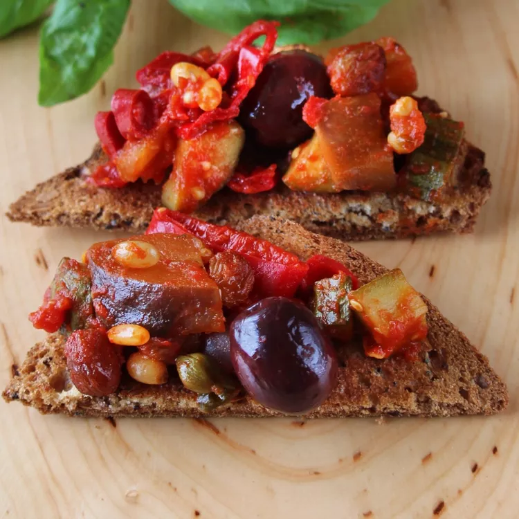

Caponata

Description
Caponata is a Sicilian delight, featuring a tangy-sweet medley of eggplant, tomatoes, olives, and capers. Spread over crusty bread, its rich, savory flavors create an irresistible bite.
The velvety eggplant mingles with briny capers and a hint of vinegar, offering a perfect contrast to the crispy bread. Each mouthful bursts with Mediterranean warmth.
Ingredients
- 2 stalks stalk celery, chopped into 1/4-inch pieces
- ½ cup olive oil
- 1 onion, thinly sliced
- 1 medium eggplant, chopped into bite-size pieces
- 2 red bell peppers, thinly sliced
- 2 zucchini, cubed
- 1 ¾ cups tomato puree (passata)
- ½ cup white vinegar
- 1 tablespoon white sugar
- 10 black olives, pitted
- 2 tablespoons raisins
- 2 tablespoons pine nuts
- 1 teaspoon capers
- salt and ground black pepper to taste
- 10 leaves basil, chopped
Steps
- Bring a large pot of lightly salted water to a boil. Add celery and cook uncovered until softened, about 1 minute. Drain in a colander and immediately immerse in ice water for several minutes to stop the cooking process. Drain.
- Heat oil in a large non-stick skillet over medium heat; add onion and celery and cook until soft and translucent, about 5 minutes. Add eggplant, red bell peppers, and zucchini and cook until slightly softened, about 5 minutes. Stir in tomato puree, vinegar, and sugar. Cook until the vegetables are tender, about 15 minutes. Add olives, raisins, pine nuts, and capers. Season with salt and pepper and cook until flavors are well combined, about 5 minutes.
- Remove skillet from heat; stir in chopped basil. Cool and serve with bread at room temperature.
Buon Apetito!
Home